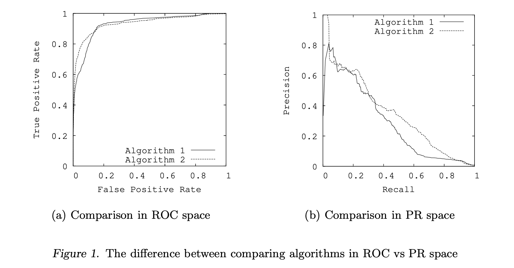

Understanding ROC and PR curves
In this page, I will summarize a few important points related to ROC and PR curves. I am summarizing results of a paper by Davis and Goadrich.
Assuming that an ROC curve has two operating points with thresholds $\gamma_1$ and $\gamma_2$, then one can design a randomized test by choosing a value $\alpha$ where $0 \le \alpha \le 1$ and using $\gamma_1$ with probability $\alpha$ and using $\gamma_2$ with probability $1-\alpha$. Using this algorithm, he can achieve the following performance,
\[TPR = \alpha TPR_{\gamma_1} + (1-\alpha) TPR_{\gamma_2}\] \[FPR = \alpha FPR_{\gamma_1} + (1-\alpha) FPR_{\gamma_2}\]Since, he can repeat this process for all $0 \le \alpha \le 1$, this shows that any point on the line segment connecting these two lines could be achieved by randomly selecting these two points. So if the ROC curve is non-convex, we can always flip a coin and make it convex. Therefore, the concept of ROC curve convex hull becomes important. Such a randomized test improves any classifier that does not have a convex ROC curve. Note that this convex hull can be found by linear interpolation.
ROC curves can present an overly optimistic view of an algorithm’s performance if there is a large skew in the class distribution. Consider a situation when the number of negative examples greatly exceeds the number of positives examples. In this case, a large change in the number of false positives can lead to a small change in the false positive rate used in ROC analysis.
\[FPR = \frac{FP}{FP + TN}\]Precision, on the other hand, by comparing false positives to true positives rather than true negatives, captures the effect of the large number of negative examples on the algorithm’s performance.
\[Precision = \frac{TP}{FP + TP}\]Therefore, in such cases the Precision-Recall (PR) curve may be a better option in comparing algorithm performances.
\[TPR = Recall = \frac{TP}{FN + TP}\]-
For a given dataset of positive and negative examples, there exists a one-to-one correspondence between a curve in ROC space and a curve in PR space, such that the curves contain exactly the same confusion matrices, if Recall is not 0. Therefore, we have a one-to-one mapping between confusion matrices and points in PR space.
-
We say that a curve dominates another curve if it is above it or equal to it.
-
For a fixed number of positive and negative examples, one curve dominates a second curve in ROC space if and only if the first dominates the second in Precision-Recall space.
In PR space, there exists an analogous curve to the convex hull in ROC space, which we call the achievable PR curve, although it cannot be achieved by linear interpolation. The issue of dominance in ROC space is directly related to this convex hull analog.
- Given a set of points in PR space, there exists an achievable PR curve that dominates the other valid curves that could be constructed with these points.
Many researchers, argue that PR curves are preferable when presented with highly-skewed datasets. Therefore it is surprising that we can find the achievable PR curve (the best legal PR curve) by first computing the convex hull in ROC space and the converting that curve into PR space. Thus the best curve in one space gives you the best curve in the other space.
A methodological issue to build a convex hull in ROC space from an algorithm that outputs a probability is to find the probability that each test set example is positive, next sort this list and then traverse the sorted list in ascending order. Denoting the true classification of the example at position $i$ in the array by $class(i)$ and the probability that the example at position $i$ is positive by $prob(i)$, for each $i$ such that $class(i) \neq class(i + 1)$ and $prob(i) < prob(i + 1)$, a classifier can be created by calling every example $j$ such that $j \ge i + 1$ positive and all other examples negative.
It’s not difficult to verify that the point $(x, y)$ on the FPR-TPR plane maps to the point \((y, \frac{y P}{y P + x N})\) on the PR plane if $P$ and $N$ show the total number of positive and negative samples respectively.

A key practical issue to address is how to interpolate between points in each space. It is straightforward to interpolate between points in ROC space by simply drawing a straight line connecting the two points. One can achieve any level of performance on this line by flipping a weighted coin to decide between the classifiers that the two end points represent. However, in Precision-Recall space, interpolation is more complicated. As the level of Recall varies, the Precision does not necessarily change linearly due to the fact that FP replaces FN in the denominator of the Precision metric. In these cases, linear interpolation is a mistake that yields an overly-optimistic estimate of performance.
One can then map the ROC convex hull into an achievable curve in PR space. However, a curve consists of infinitely many points, and thus a practical, approximate method for translation is needed.